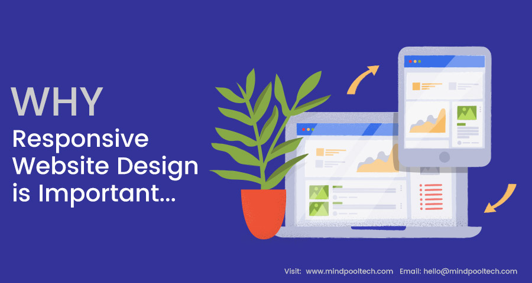
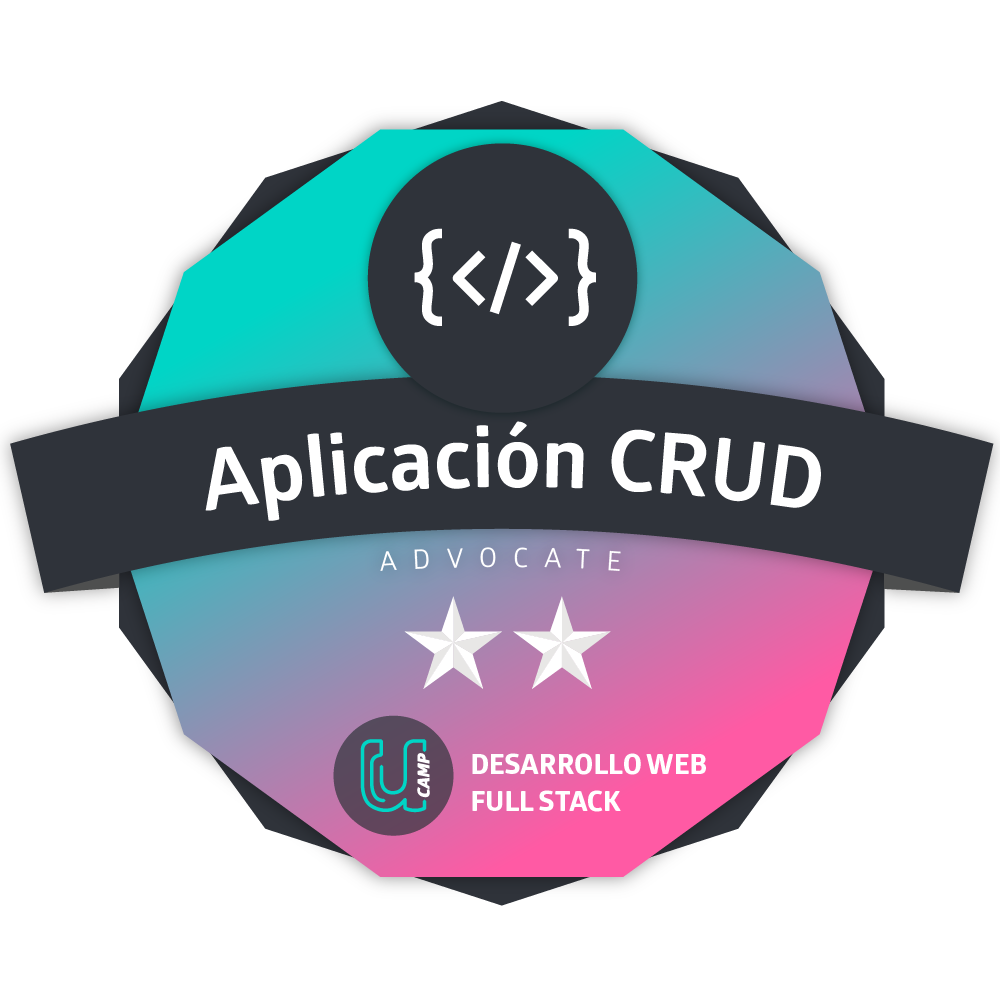

My name is Nancira Riaño a Freelancer developer. I am a Chemical Engineer since 1993 from de Veracruzana University and I got a grade as a Lawyer from UTEL University on May 2021, on this year I began a course as FullStack developer in the same University too and I am just finishing it. I am so exiting to begin in this marvelous world of the technology that improve every day.
During the bootcamp I have got knowledge about HTML5, CSS desing, JS, Node Js, React and cloud experiences so as Azure and firebase, working with frontend and backend technologies too.


Now you can find the url address of some of my projects and a short description of them.
LANDING PAGE: Is a website of a Sewage Water Treatment Company desingned with Responsive Desing, html5, and css styles.
Landing PageFORM CRUD: Is a Form to get a data register using the process CRUD, Creat, Read, Update, and Delete.
Form Crud 